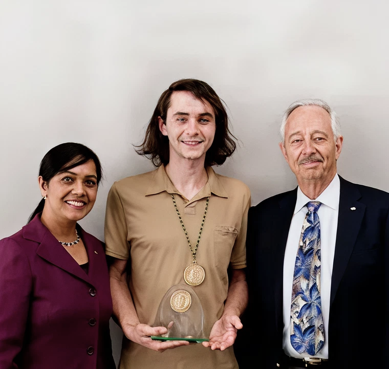

Dr. Arthur Furst
Founder of NeoLife SAB | Ph.D., Sc.D., D.A.T.S.
Honoring the life and achievements of an extraordinary man.
Founder of NeoLife SAB | Ph.D., Sc.D., D.A.T.S.
Honoring the life and achievements of an extraordinary man.
Founder of NeoLife SAB | Ph.D., Sc.D., D.A.T.S.
Honoring the life and achievements of an extraordinary man.


Pioneer in Toxicology and Cancer Research
Dr. Arthur Furst (1916–1999) was a distinguished American chemist and toxicologist whose groundbreaking research in chemical carcinogenesis and environmental health helped shape modern understanding of cancer-causing agents.
Throughout his illustrious career spanning over five decades, Dr. Furst made significant contributions to the fields of organic chemistry, toxicology, and cancer research. His work at the University of San Francisco, where he served as Professor of Chemistry and Director of the Institute of Chemical Biology, established him as one of the leading authorities on the relationship between chemical structure and carcinogenic activity.

Tracing the remarkable journey of Dr. Arthur Furst through decades of scientific achievement
Arthur Furst was born on March 15, 1916, in New York City, New York.
Arthur Furst was born on March 15, 1916, in New York City, New York.
Graduated from the City College of New York with a B.S. in Chemistry.
Graduated from the City College of New York with a B.S. in Chemistry.
Earned his M.S. in Organic Chemistry from New York University.
Earned his M.S. in Organic Chemistry from New York University.
Received his Ph.D. in Organic Chemistry from New York University.
Received his Ph.D. in Organic Chemistry from New York University.
Joined American Cyanamid Company as a research chemist, beginning his distinguished career in pharmaceutical research.
Joined American Cyanamid Company as a research chemist, beginning his distinguished career in pharmaceutical research.
Appointed as Senior Research Chemist at Stanford Research Institute, focusing on cancer research and chemical carcinogenesis.
Appointed as Senior Research Chemist at Stanford Research Institute, focusing on cancer research and chemical carcinogenesis.
Became Professor of Chemistry and Director of the Institute of Chemical Biology at the University of San Francisco.
Became Professor of Chemistry and Director of the Institute of Chemical Biology at the University of San Francisco.
Published groundbreaking work on the relationship between chemical structure and carcinogenic activity.
Published groundbreaking work on the relationship between chemical structure and carcinogenic activity.
Appointed to serve on numerous national committees including the National Cancer Institute and FDA advisory panels.
Appointed to serve on numerous national committees including the National Cancer Institute and FDA advisory panels.
Served as consultant to the World Health Organization on environmental carcinogens.
Served as consultant to the World Health Organization on environmental carcinogens.
Expanded research programs in environmental toxicology and public health advocacy.
Expanded research programs in environmental toxicology and public health advocacy.
Honored for lifetime achievements in toxicology and cancer prevention research.
Honored for lifetime achievements in toxicology and cancer prevention research.
A lifetime dedicated to scientific discovery and public health
Explore Dr. Furst's remarkable journey through historical photographs spanning nearly a century.


.jpg)


Continuing Dr. Furst's legacy through educational excellence. The Arthur Furst Scholarship has supported outstanding chemistry and biology students at the University of San Francisco since 1995.

Key research contributions that advanced the field of toxicology
Journal of the American Chemical Society
Environmental Health Perspectives
Cancer Research
Annual Review of Pharmacology
Colleagues and friends remember Dr. Furst's profound impact on science and lives